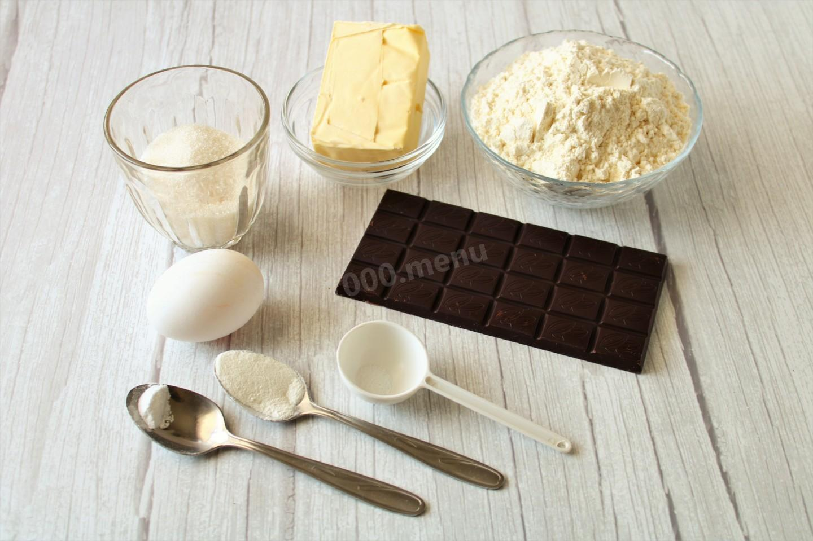
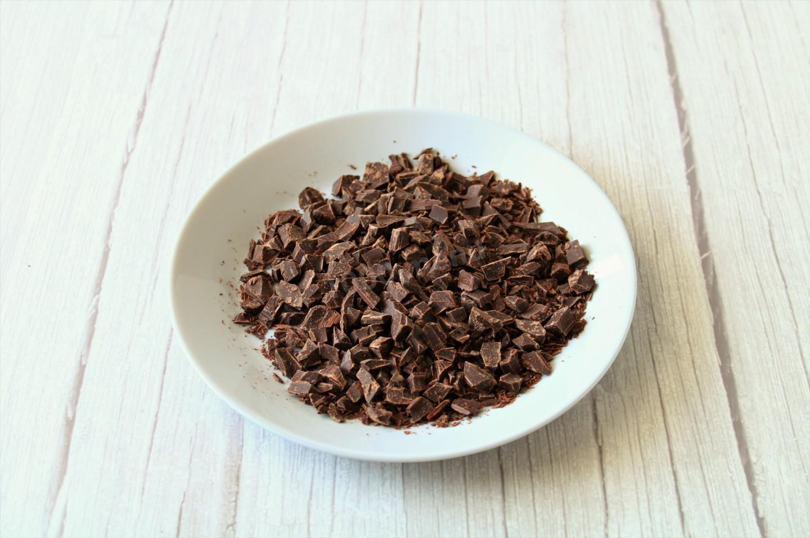
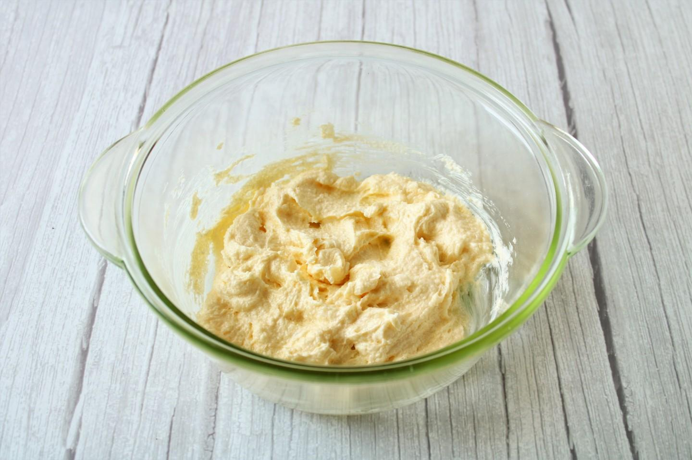
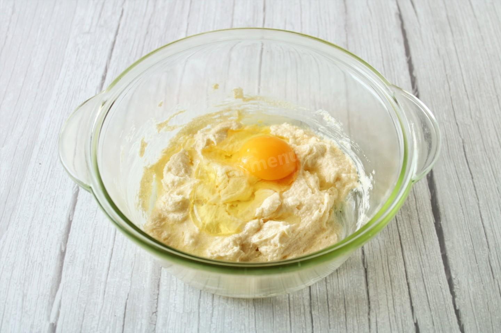
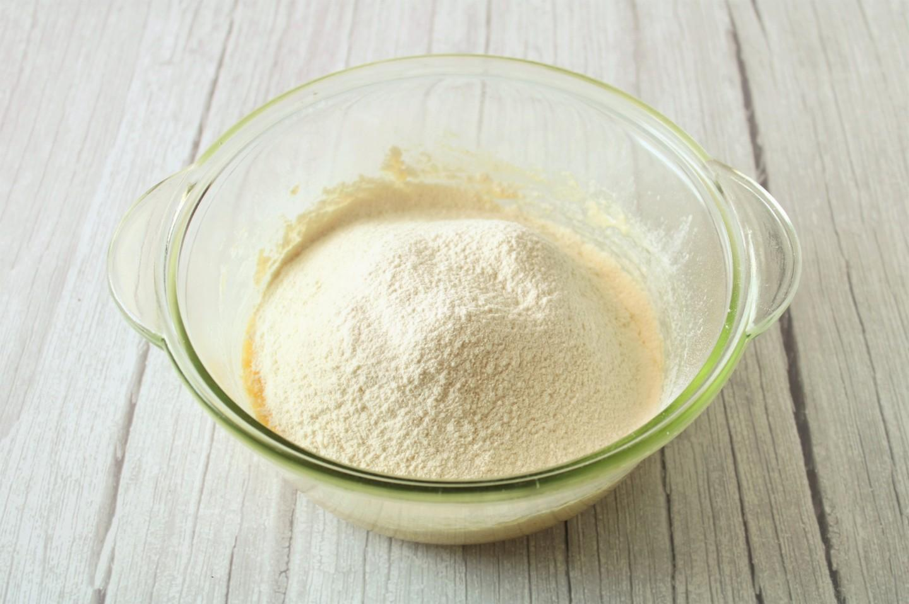
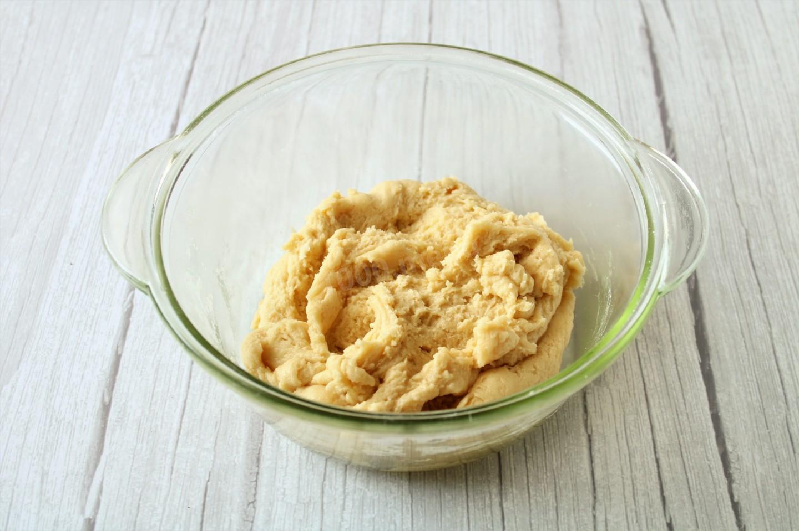
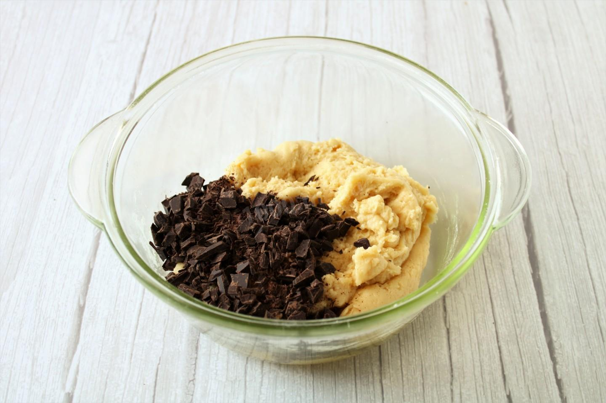
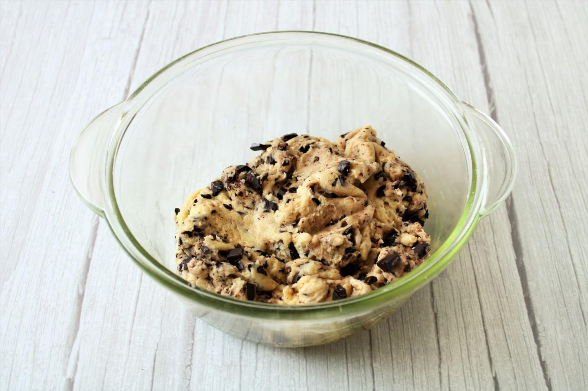
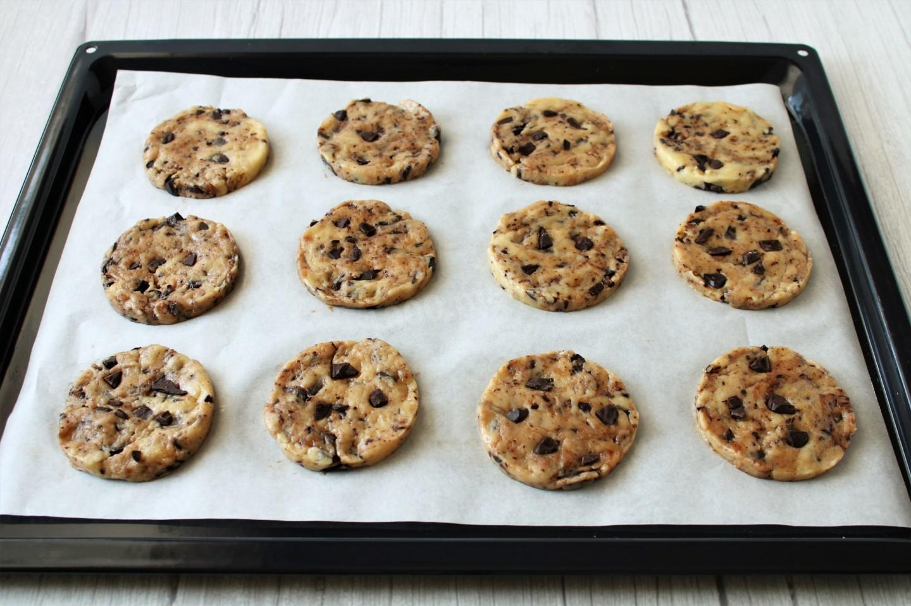
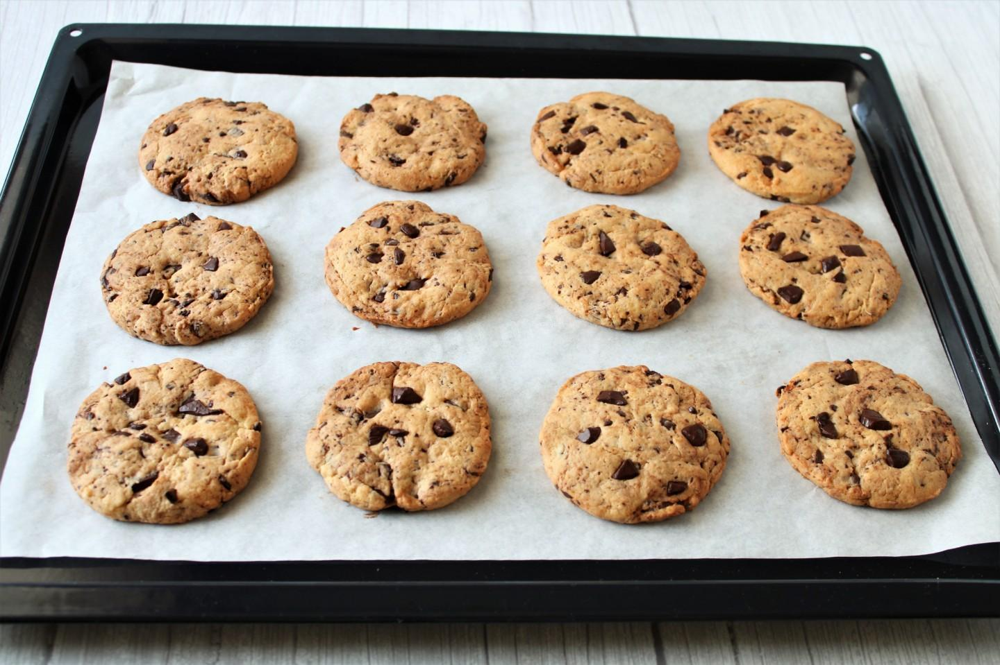

Шаг 1. Подготовьте необходимые ингредиенты. Сливочное масло должно быть мягким, чтобы его легко можно было растереть. Поэтому его нужно достать из холодильника заранее, примерно за 2 часа до приготовления. Шоколад должен быть хорошего качества, а вот горький или классический вариант - выбирайте по вкусу. О свойствах муки читайте в отдельной статье в конце рецепта.

Шаг 2. Шоколад измельчите острым ножом в крошку. Чтобы это было легче сделать, можете поместить шоколад предварительно в морозилку на 15 минут. В твердом состоянии он лучше крошится. Степень измельчения выбирайте по желанию, можете сделать крошку более мелкой или покрупнее.

Шаг 3. Размягченное масло разотрите с сахаром. В этом случае можете воспользоваться обычной вилкой или венчиком.

Шаг 4. Яйцо вымойте и обсушите салфетками. В сахарно-масляную смесь добавьте яйцо. Взбейте все до однородности, чтобы яйцо равномерно распределилось по всему объему массы.

Шаг 5. Муку предварительно смешайте с солью, разрыхлителем и ванилином и просейте в тесто. Благодаря просеиванию муки печенье при выпечке будет лучше подниматься. Учитывайте, что муки у вас может уйти больше или меньше, поэтому ориентируйтесь на консистенцию теста. Чем заменить ванилин и об особенностях использования в выпечке разрыхлителя читайте в отдельных статьях в конце этого рецепта.

Шаг 6. Быстро замесите тесто. Оно получается однородное, эластичное, маслянистое. Долго тесто не месите, чтобы печенье не получилось тугим.

Шаг 7. Добавьте в тесто шоколадную крошку.

Шаг 8. Еще раз быстро перемешайте для равномерного распределения шоколада по всему тесту.

Шаг 9. На застеленный пергаментом лист выкладывайте тесто ложкой, придавая печенюшкам круглую форму. Я воспользовалась кулинарной формой диаметром 6 см. Выпекайте печенье в заранее разогретой до 190 градусов духовке около 20 минут. Точное время и температуру запекания определяйте по своей духовке.

Шаг 10. Печенье не должно сильно зарумяниться, разве что немного подрумянится с краев. Если долго держать печенье в духовке, оно может пересохнуть, поэтому не дожидайтесь полного румянца. Готовое печенье достаньте из духовки, остудите и подавайте.